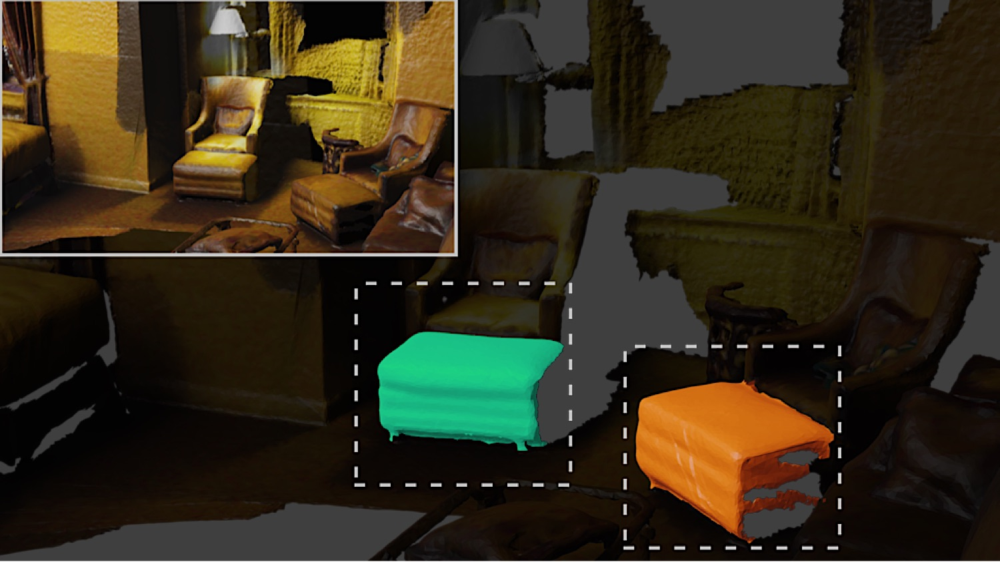
footrest
Open-vocabulary 3D instance segmentation recognizes objects beyond predefined training categories, but assigning semantic labels still often requires text queries at inference time. This assumption conflicts with open-ended 3D scene understanding, where object names may be unknown before observing the scene. Recent open-ended 3D methods reduce this dependence by generating labels from visual inputs, but they often aggregate all associated views or query a language model for each proposal, producing noisy evidence and increasing the cost of 3D aggregation and label assignment. We propose OpenPocket3D, a modular framework that converts existing open-vocabulary 3D instance segmentation models into open-ended predictors without additional training. For each 3D proposal, OpenPocket3D ranks views using a visibility score and constructs an instance-wise pocket vocabulary from labels localized by the internal attention maps of a 2D vision-language model. It then selects the final label by combining 3D-text semantic similarity from a frozen open-vocabulary backbone with geometric consistency from projected 3D masks. By directly reusing precomputed 3D masks and instance features from the backbone, OpenPocket3D avoids dense point-wise feature lifting and proposal-wise language querying while remaining applicable to diverse open-vocabulary backbones. Experiments on ScanNet200, ScanNet++, and Replica show that OpenPocket3D can be plugged into various open-vocabulary backbones and VLM label generators. Under the same open-ended setting as previous work, predictors obtained by applying OpenPocket3D remain competitive across backbones, and the strongest configuration reaches state-of-the-art performance on most ScanNet200 and ScanNet++ metrics.
Using OpenMask3D you can perform free form queries which capture uncommon objects, affordances, object properties, geometry, materials, and states.

footrest
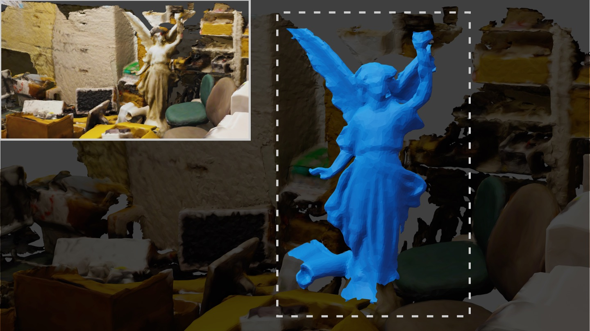
angel
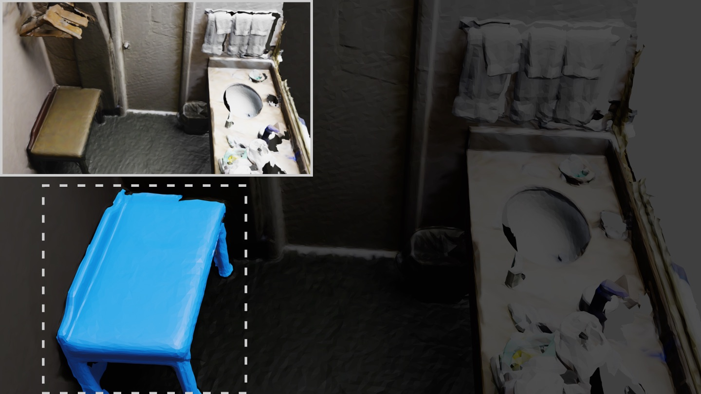
“sit”
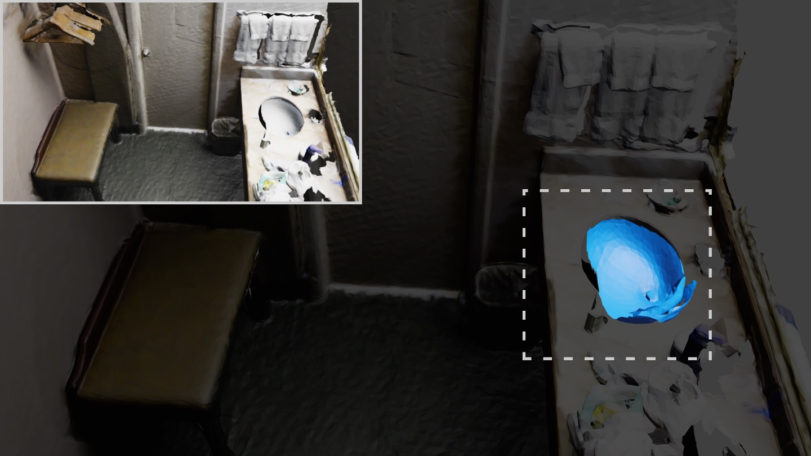
“wash”
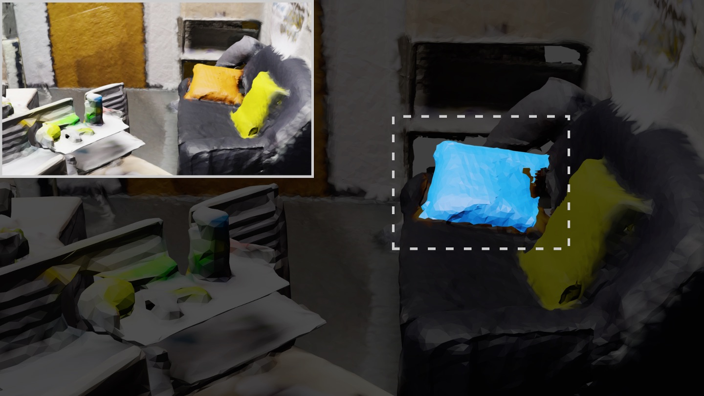
“an orange pillow”
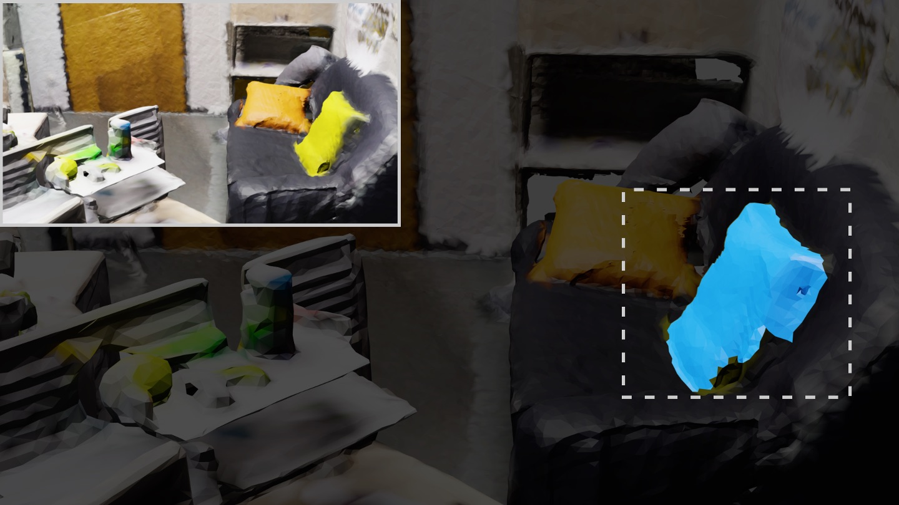
“a yellow pillow”
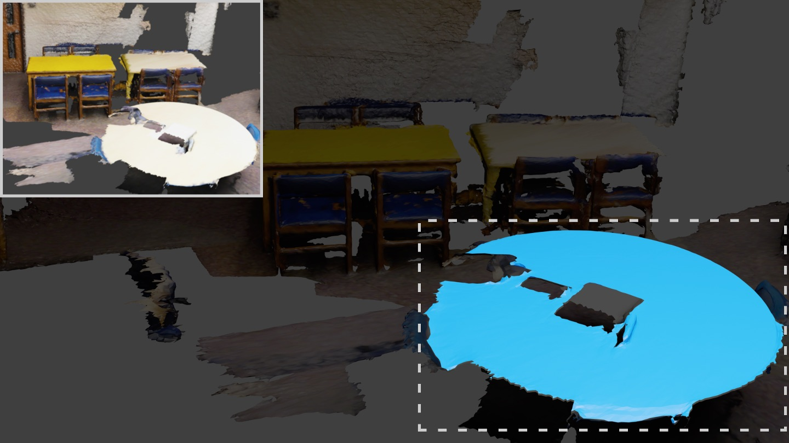
“a circular table”
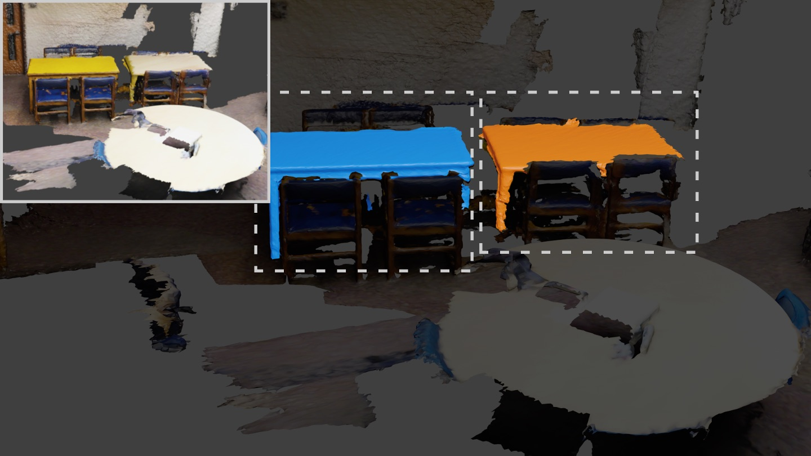
“a rectangular table”
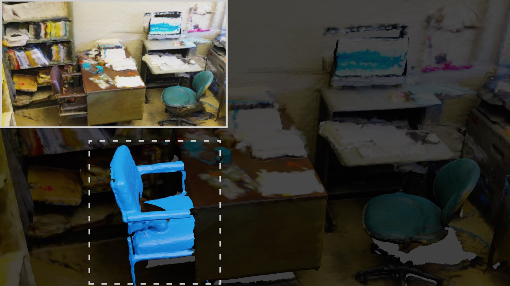
“a leather chair”
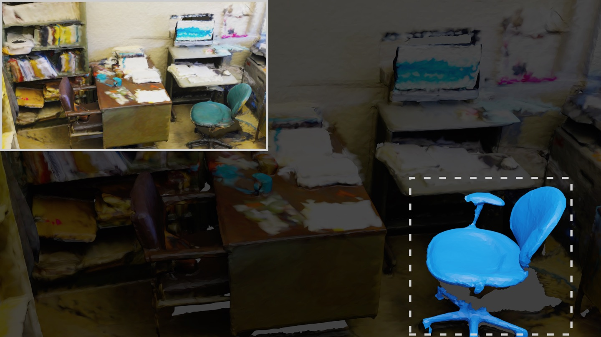
“a fabric chair”
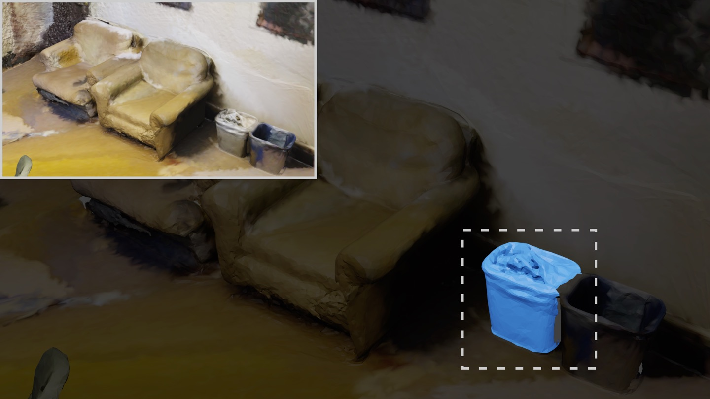
“a full garbage bin”
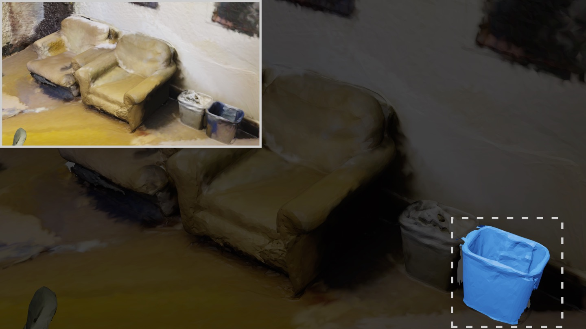
“an empty garbage bin”